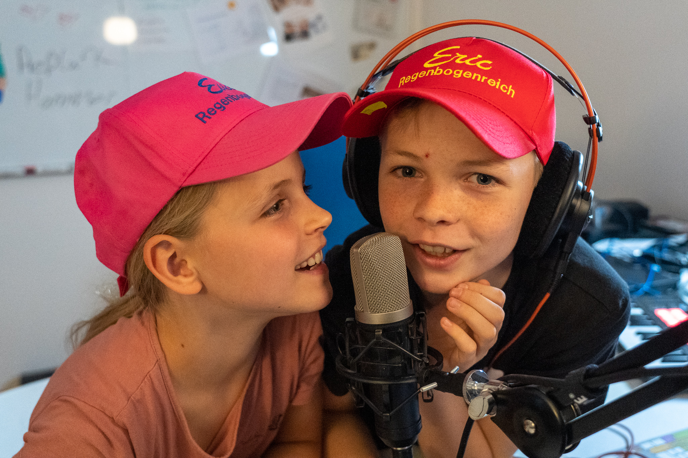
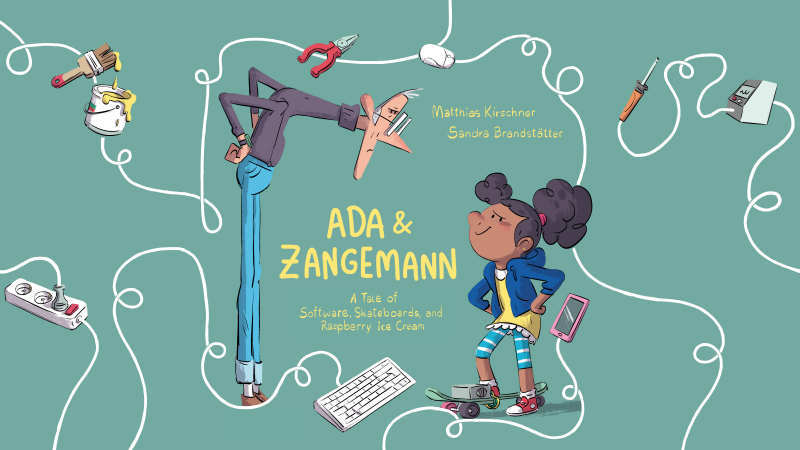
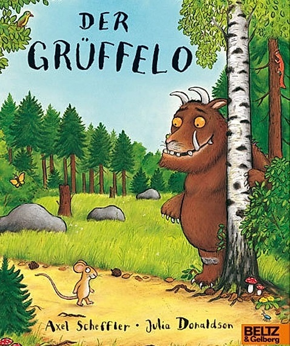

Regenbogenreich
AudioCast
Informationen
Audiocast oder auch Podcasts (einer Wortschöpfung aus der Apple-Welt von iPod und Broadcast) genannt, sind Nachrichten oder auch Blogs im Audioformat, meist Sprache oder auch Musik. Sozusagen Youtube nicht für Video, sondern rein für Ton. Video Podcasts gibt es auch und werden VodCasts genannt.Was wollen wir den für Aufnahmen machen? Vielleicht erstmal Buchlesungen, die wir uns als gute Nachgeschichten vorlesen, aufnehmen und später anhören können. Klasse fände ich auch selbst ausgedachte Hörspiele im Sinne von TKKG, ??? usw. Weitere Ideen und Beiträge sind gerne gesehen.
Die Audiocast werden wir hier auf dieser Seite veröffentlichen. Angenehmer ist es in einer Podccast-App. Noch dazu können die Folgen heruntergeladen werden, um offline angehört zu werden. Dazu werden RSS-Feeds genutzt. Diese Feeds können in die herkömmlichen Podcasts-Apps integriert werden. Nehmt dazu diese Adresse: https://regenbogenreich.eu/audiocast.rssAudioCast Apps/Programme
Apps/Programme zum Anhören und Abonieren von Podcasts:- Apple/iOS: Apple Podcasts
- Android: Google Podcast
- Apple/iOS: Sprachmemos (sollte schon installiert sein)
- Android: Audio Recorder (Open Source :-) )
- Windows/Linux/Mac: Audacity (Open Source)
Audiocasts
#6 RegenbogenReich Radio - Sendung vom 31.03.2023
#5 Hörbuch "Ada & Zangemann - Ein Märchen über Software, Skateboards und Himbeereis"

Authoren: Matthias Kirschner und Sandra Brandstätter
Veröffentlicht unter der CC BY-SA 3.0 DE.
Weitere Informationen und Material: https://ada.fsfe.org
#4 RegenbogenReich Radio - Sendung vom 24.10.2022
#3 RegenbogenReich Radio - Premierensendung vom 18.10.2022
#2.1 Das RegenbogenReich liest den Grüffelo
Eva als Maus
Skript: VHS-Der-Grüffelo-Übungstext.pdf
#2 Das RegenbogenReich liest den Grüffelo
Eric als Maus
Skript: VHS-Der-Grüffelo-Übungstext.pdf